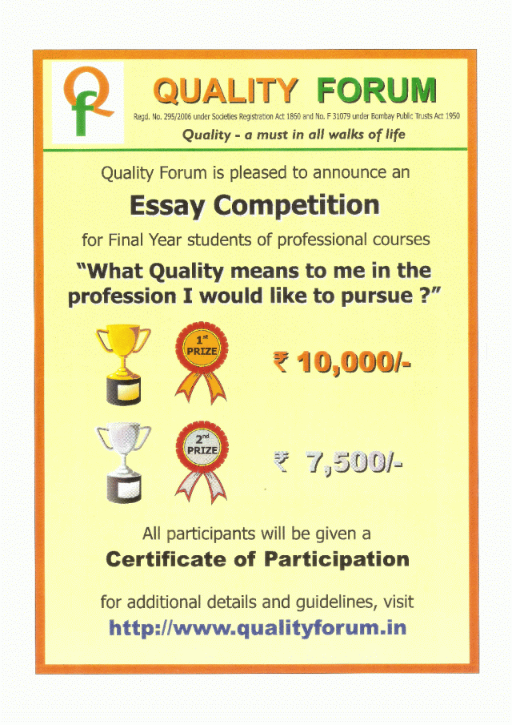

EVENTS 2011
Quality Forum conducts many
programs, lectures, seminars and events, sometimes in
association with other leading organizations.
For future programs, please look at the EVENTS page.
For more information about some of the events conducted in the past, please visit the EVENTS page, and then select the year.
Measurement System Analysis for repeatability and reproducibility as applicable to process industries.
Held on March 26, 2011, in association with Quality Council of India.
This Program was also attended by 26 participants. The feedback received from the participants was divided between “Excellent” and “Good” with one or two as “Fairly Good”
Calibration and it's implication in Measurement & Decision making
Held on March 24, 2011, in association with Quality Council of India.
The Program was attended by 26 participants. The feedback received from the participants was divided between “Excellent” and “Good” with one or two as “Fairly Good”
For future programs, please look at the EVENTS page.
For more information about some of the events conducted in the past, please visit the EVENTS page, and then select the year.
NOVEMBER 10, 2011 |
WORLD QUALITY DAY - REPORT
|
|
In order to sensitize the future citizens of the country on the importance of ‘quality’, it was decided to organize an Essay Competition as part of the WQD celebrations, for the students of various vocational education institutions, viz. Engineering, Management, Medicine and allied subjects, in and around Mumbai on “What Quality means to me in the profession I would like to pursue?” It was also felt that participation in competitions such as this would give students an opportunity to judge their ability and suitability for a professional life, apart from giving them confidence in compilation of thoughts and written communication. In order to motivate participation, first prize of Rs. 10,000.00 and a second prize of Rs. 7500.00 were announced.  Accordingly, invitations were sent to various colleges and institutions though personal contacts and directly. Subsequently, 25 entries were received from six colleges and institutes. While judging, it was found that two entries qualified for the second prize. However, instead of splitting the prize amount, it was decided to award two second prizes each of Rs. 7500.00. The World Quality Day Function After a brief session on welcome and few words about WQD, QCI & QF, Dr. Girdhar Gyani, Secretary General, Quality Council of India delivered the Keynote address on ‘Promoting excellence in the field of vocational education’. He dwelt upon the need for development of skill in various disciplines of industry and service sector, how a formal education in the vocational skills will go a long way in enhancing the competence of the students and make them better suited to the industries’ needs. He also talked about how improvement can be effected in this area. Dr. Gyani’s talk was followed by a highly entertaining and informative presentation by Dr. T. Venkatesh, Principal Adviser-Quality Council of India (QCI) & National Referral Centre for Lead Poisoning in India (NRCLPI) and Professor- Department of Biochemistry & Biophysics, St. John's Medical College, Bengaluru. Dr Venkatesh explained with live examples on what ‘Reliable health care’ should be and shared some of the initiatives taken by QCI in this respect, with specific reference to the NABH accreditation. Prizes for the Essay competition were given out by Dr. Gyani. The first prize of Rs. 10,000.00 was awarded to Ms. Aleta Rodrigues, final year student of Don Bosco Institute of Technology, Mumbai, while the two second prizes of Rs. 7,500.00 each was awarded to Mr. Debasis Karmokar, also of Don Bosco Institute and Ms. Sarani Banerjee, final year student of Welingkar Institute of Management, Mumbai. A certificate of participation was handed over to all the participating students of the essay competition present in the function by Dr. Venkatesh. For those of the participating students who could not attend the WQD function, the certificates were couriered to them. Award for Lifetime achievement in quality Since the last three years, Quality Forum has been honoring a selected senior person on the World Quality Day with an Award for Lifetime achievement in quality. This year Prof. H.C. Patel was selected for this award. Brief profile of Prof Patel is given below. Prof. Patel graduated in Mechanical & Electrical Engineering from Pune University in 1951, obtained M. Tech. from I.I.T., Kharagpur in 1956 and studied Production Management at Harvard Business School under USAID grant during 1964-1965. After working with Bombay State Road Transport Corporation (1952-1955) and Mysore Commercial Union, Bangalore (1956–1959), Prof Patel joined the academia first as Asst. Prof. in Mechanical Engineering, V.J.T.I., Bombay (1959-1961) and rose to become the Professor & its Head of Mech. Eng. Dept. (1961- to 1972). Subsequently, he joined Shri Bhagubhai Mafatlal Polytechnic as the Principal & Secretary (1972-1988) and later became Adviser (1988-1991). As the Executive Director, Prof Patel founded the National Centre for Quality Management (NCQM), Mumbai and had managed its affairs from 1991 to 1997. He has traveled abroad many times as delegate and for receipt of awards. He was awarded Ramaswamy Cup in 1976 for outstanding contribution to Industrial Engineering Profession and was presented ‘Lilian Gilbreth Award’ 95-96 by Indian Institution of Industrial Engineering. In his checkered career, he worked inter-alia as Chairman, Board of Examination [1975-1982], as Hon. Secretary [1983-1984], and as Chairman, National Council [1985] of the Indian Institution of Industrial Engineering. He was President, Bombay Productivity Council during 1987-1989, and was the Hon. Secretary, NCQM, Mumbai (2002-2010). He is a Qualified Lead Assessor for ISO 9001 QMS, has conducted many training programs on ISO 9001 awareness and on Internal Quality Audit and has assisted over 45 organizations for achieving ISO 9001 Certification. The award comprised a Certificate and a Trophy with appropriate inscription, and was handed over to Prof Patel by Dr. Gyani. Prof. Patel responded with thanks and deep sense of appreciation. The program ended with a vote of thanks to all and a scrumptious dinner, during which both the eminent speakers were kept occupied with close interaction by participants of the function. |
NOVEMBER 10, 2011 |
WORLD QUALITY DAY - PHOTO GALLERY
|
|
|
MARCH 26, 2011
Measurement System Analysis for repeatability and reproducibility as applicable to process industries.
Held on March 26, 2011, in association with Quality Council of India.
This Program was also attended by 26 participants. The feedback received from the participants was divided between “Excellent” and “Good” with one or two as “Fairly Good”
MARCH 24, 2011
Calibration and it's implication in Measurement & Decision making
Held on March 24, 2011, in association with Quality Council of India.
The Program was attended by 26 participants. The feedback received from the participants was divided between “Excellent” and “Good” with one or two as “Fairly Good”